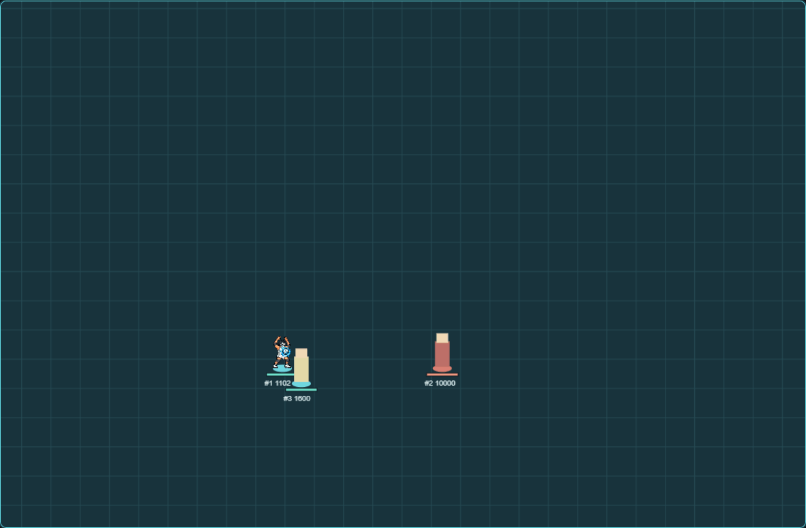
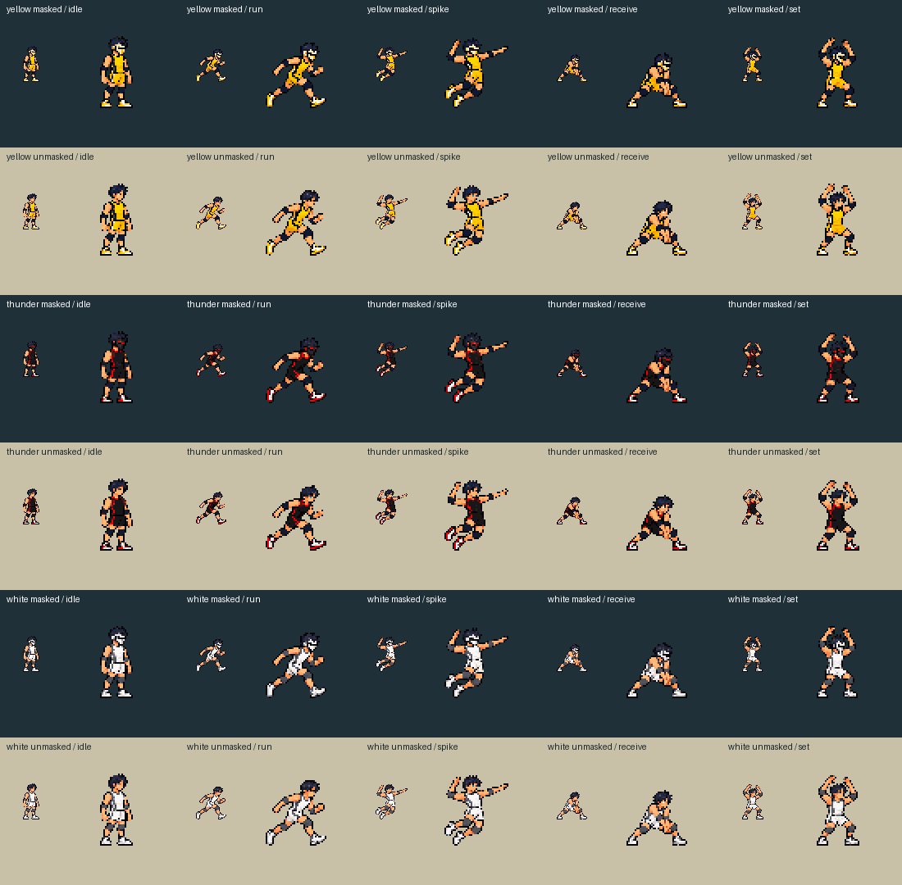
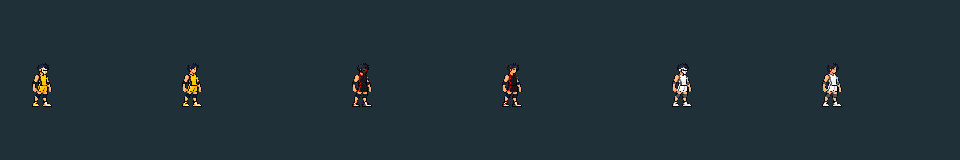

Playable shared-core prototype. Artwork is a proposal; nothing here is installed or packaged.
Open Rally Lab15 Pace per qualifying champion spike, verified support contribution or perfect Receive. Choose one to five complete bars with 1–5, arm with Shift+R, then spend on Receive, Set or takeoff. Run-up alone spends nothing. Bars never refill on a timer.
Q Receive · E / Shift+E Self / teammate Set · Space directional run-up / optional takeoff · F contact · R Serve. Roles follow the action. Exhaustion slows movement and blocks new Burst spending and Pace gains; ordinary actions remain available.
Previously earned White form, five-bar Self Set, Serve and a perfect apex contact reach 18.02 m. The five-second suspension permits 4.4 seconds of aim, followed by a fixed 0.6-second line and impact warning. Rally remains targetable with 50% protection; enemy control cancels the shot. Release pierces units and walls, uses one hit ledger, then returns the ball.

This demonstration presets White and a 1000% Receive bank in practice. It does not earn those resources through a live match. The reserved bank produces 452.8 game-calibrated km/h and Overpressure; the 120000-radius crater becomes 144000, with no extra damage or stun packet.
Attack remains the item stat. Spike Power adds form, Set and Burst points, changing damage and velocity. Contact height selects normal, gold Thunder, Black or White independently of body colour. Receive stores force only from explicit calibrated receipts, up to 1000% of the ordinary spike snapshotted when the bank starts. Reserved force is added once to the first champion and cannot multiply through splash.
Native incoming-force and ally-contribution receipts are unavailable until calibrated in the actual host. The Lab labels both as simulated. Serve's full-V vision remains Lab-only; the supported native SDK has no verified sector reveal.
Yellow, black/red and white masked/unmasked bodies and the visual setter clone are carried forward. Impossible reuses frozen White effects in staged layers. Native enlarged warning contours currently use bounded existing markers; continuous final line/ring artwork and the 18-metre host rendering still require visual acceptance.


Rally 2.1 and 2.2 files remain unchanged. Their Flow, charge pips and paid Black jump are retired in 3.0. Older recordings can be inspected, but require their original rules to replay.
2.1 verification · 2.2 White Storm captureAutomated checks, Lab observations and actual-game acceptance are separate. Artwork approval, installation, release packaging and career migration remain pending.